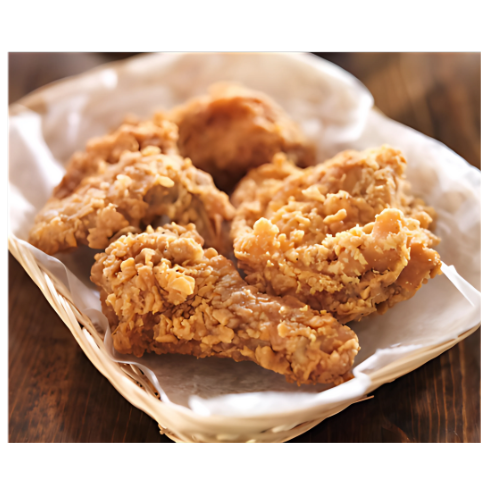

Fried Chicken
Fried chicken is a beloved dish known for its irresistible combination of crispy, golden skin and tender, flavorful meat. Each piece is coated in a seasoned batter or flour, then fried to perfection, creating a crunchy exterior that shatters with every bite. Beneath the crisp, crackling surface, the chicken remains juicy and succulent, bursting with savory juices that contrast beautifully with the crust.
The flavor is deep and satisfying, often infused with a mix of spices like garlic, paprika, black pepper, and a hint of cayenne, giving the chicken a rich, seasoned taste that lingers on the palate. Whether enjoyed hot from the fryer or cooled slightly to savor the complexity of the spices, fried chicken offers a mouthwatering experience that’s both hearty and comforting.
The golden-brown exterior is not just a visual treat but a textural masterpiece, providing a crunchy shell that perfectly complements the soft, moist interior. Whether served with sides like rice, pasta, or mashed potatoes, fried chicken is a timeless dish, cherished for its satisfying crunch, flavorful seasoning, and juicy tenderness..
Origin
Fried chicken has a vibrant and varied origin in Southeast Asia, where it has evolved into beloved culinary staples across the region. Influenced by local traditions, fried chicken in Southeast Asia often features a marinated preparation that incorporates a blend of aromatic spices, such as turmeric, lemongrass, and garlic, which enhance the flavor and aroma of the dish. Countries like Indonesia and Thailand have their own unique styles, with fried chicken served alongside rice and a variety of dipping sauces that showcase the region's rich culinary diversity.
In the Philippines, Jollibee, a popular fast-food chain, has made its mark with its own signature fried chicken, known as Chickenjoy. Renowned for its crispy skin and juicy, flavorful meat, Chickenjoy is often served with a side of gravy, making it a favorite among locals and tourists alike. Jollibee has successfully blended Western fast-food concepts with Filipino flavors, creating a unique dining experience that resonates with the Filipino community. This beloved dish is enjoyed at family gatherings, celebrations, and as a quick meal, highlighting the cultural significance of fried chicken in Southeast Asia. Today, fried chicken remains a cherished comfort food throughout the region, showcasing the rich flavors and traditions that define Southeast Asian cuisine.
Ingredients
For chicken Marinade:
- 1 kg (about 2.2 lbs) chicken pieces (legs, thighs, or wings)
- 1 cup buttermilk (or 1 cup milk + 1 tbsp vinegar/lemon juice)
- 1 tsp garlic powder
- 1 tsp onion powder
- 1 tsp salt
- 1 tsp black pepper
- 1/2 tsp paprika (optional)
- 1/2 tsp cayenne pepper (optional, for heat)
For Breading:
- 1 cup all-purpose flour
- 1/2 cup cornstarch
- 1/2 tsp salt
- 1/2 tsp black pepper
- 1/2 tsp garlic powder
- 1/2 tsp onion powder
- 1/2 tsp paprika (optional)
How to Cook
- In a large bowl, combine the buttermilk, garlic powder, onion powder, salt, black pepper, paprika, and cayenne pepper.
- Add the chicken pieces, ensuring they are well-coated. Cover and refrigerate for at least 4 hours, preferably overnight.
- In a separate bowl, mix together the flour, cornstarch, salt, black pepper, garlic powder, onion powder, and paprika.
- Remove the marinated chicken from the refrigerator. Let excess marinade drip off, but don’t rinse the chicken.
- Dredge each piece of chicken in the flour mixture, making sure it is fully coated. Shake off any excess flour and set aside.
- In a deep skillet or frying pan, heat vegetable oil over medium heat until it reaches about 350°F (175°C). Use enough oil to submerge the chicken pieces.
- Carefully place the coated chicken pieces in the hot oil, being careful not to overcrowd the pan. Fry in batches if necessary.
- Fry the chicken for about 12-15 minutes, turning occasionally, until golden brown and the internal temperature reaches 165°F (75°C).
- Once cooked, transfer the fried chicken to a plate lined with paper towels to drain excess oil. Allow the chicken to rest for a few minutes.
- Serve your homemade Chickenjoy hot with a side of gravy for dipping. Enjoy with rice or your favorite side dishes!